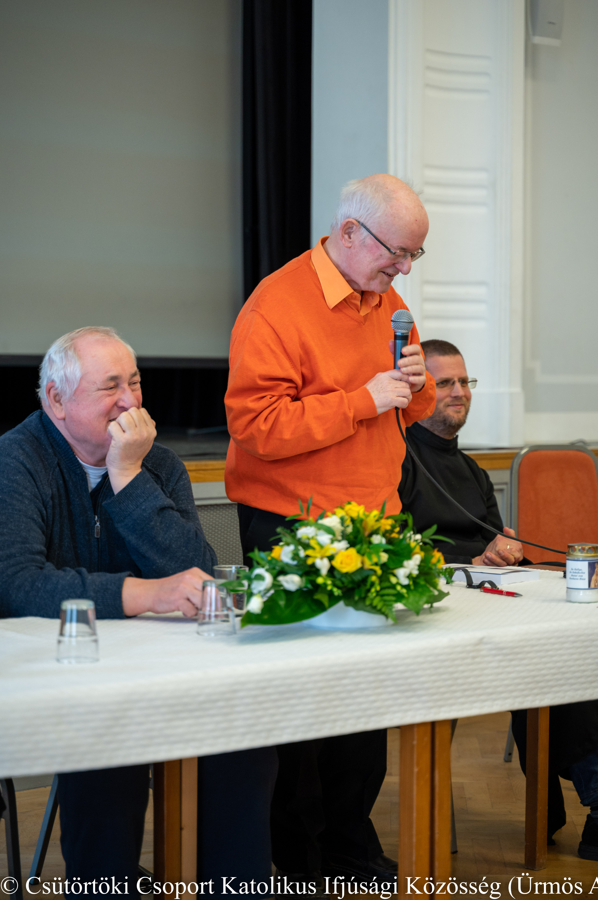

Kiss Ulrich atya és a 28 éves CsüCsop (Csütörtöki Csoport Katolikus Ifjúsági Közösség)
Három jezsuita is részt vett a Bíró László püspök vezette CsüCsop több éves késéssel megrendezett ezüstjubileumi ünnepén Vácon, 2023. április 15-én. Sajgó Szabolcs atya a Párbeszéd Háza korábbi igazgatójaként kapott meghívást: személyében a közösség a Rend felé is kifejezte köszönetét, amiért a Horánszky utcában több mint egy évtizedig helyet adott a csoport – jelenleg szünetelő – heti összejöveteleinek és egyéb rendezvényeinek.

Jancsó Árpád atya maga is „csücsopos”, a hittanosok közül kikerült papi és szerzetesi hivatások egyike. Kiss Ulrich atya pedig egykor sajátos karizmájával egy „stratégiai ponton” adott fontos tanítást, tanácsot és lökést a Csütörtöki Csoportnak. 2001 októberében egy Dobogókőn tartott „továbbképzésen” rávezette a dinamikus növekedési fázisban lévő közösség felelőseit, hogy megfogalmazzák annak sajátos küldetését. Amint a CsüCsop krónikájában feljegyezték: „A résztvevőknek máig fülükbe cseng Kiss Ulrich atya hangja: »De barátaim, mi a cél?« Ő javasolta egy kis tanács felállítását is.” Segítségével tudatosabb és szervezettebb lett a megvalósítása a missziónak, miszerint a Csütörtöki Csoport lelki otthona legyen a fővárosban tanuló vidéki, illetve budapesti fiataloknak, friss diplomásoknak, és felkészítse őket, hogy a későbbiekben ők is hasonló, elmélyülésre alkalmat adó, ugyanakkor nyitott közösségek építői legyenek ott, ahová kerülnek. A néhány fős „Kistanács” intézménye a szervezőmunka hatékony formája maradt a CsüCsop-ban, amely egy időben jóval több mint 200 fős tagsággal, közel 30 kiscsoporttal működött.
Ulrich atya meghívást kapott és meglátogatta a Csütörtöki Csoport 2002. évi nyári táborát, amelynek programjában az egyik napon a Lakiteleki Népfőiskolán közéleti témájú beszélgetések is szerepeltek. Ezt követően nem ott kért szállást, hanem a csücsoposokkal tartott a tiszakürti általános iskolába, ahol egy szertárban jutott neki ágy. Fontos volt számára, hogy több időt tölthessen a fiatalokkal. (Képünkön jóízűen reggelizik velük.) Húsz évvel később is „végig kitartott” Bíró László püspök mellett a jubileumi lelkigyakorlaton, és a zárónapon arra biztatott, hogy bár a CsüCsop a heti összejövetelek formájában most nem működik, tagjai formáljanak egy „csütörtöki mozgalmat”, saját környezetükben, közösségeikben vigyék tovább az egymás között megélt lelkiséget.
Ferenc pápa és a magyar jezsuiták április 29-i találkozóján, a budapesti apostoli nunciatúrán, a spontán kérdések sorában Kiss Ulrich atya megemlítette, hogy nemrég egy 25 éves jubileumát ünneplő ifjúsági közösségnél járt, ahol a résztvevők a jövőt tervezgették, és kíváncsiak, mit vár tőlük a Szentatya, az Egyház. A pápa két dolgot üzent, kötött a lelkükre: hitelesség és koherencia, összhang a cselekedetek között. A CsüCsop több mint ezer egykori tagja és gyermekeik felnövő generációja e program jegyében építheti a magyar egyházat ott, ahová a Jóisten rendelte őket.
Sz. Á.
Képek forrása: CsüCsop, Ürmös Antal, Vatican Media
A kezdetek (részlet "A Csütörtöki Csoport története" c. összeállításból)
1995. augusztus 15. Bíró László kalocsa-kecskeméti segédpüspök a budapesti Központi Szeminárium rektora lesz.
1995. augusztus – Nézsán, az alakulófélben lévő kecskeméti Szentcsalád Plébánia ifjúsági lelkigyakorlatán megalakul a „pesti kiscsoport” a Budapesten tanuló (Ákos, Peti, Barni), illetve a fővárosba kerülő érettségizett piarista diákok (Zoli, Norbi, Fecó, Árpi) részvételével.
1995. szeptember 12. Kedd este a „Hetek Bandája” bemutatkozik Püspök atyának.
1995. szeptember 14. Első találkozó a Központi Szemináriumban, a 7-es teremben: az atya, a kecskeméti Nóri és a „hetek” közösen tervezgetik a leendő hittan rendjét, témáját.
1995. szeptember 21. Az első „csütörtöki hittan”. A hét fiú, valamint három lány: Nóri, Dóri és Mehi hallgatja „László atyát”. (Barátainkat, ismerőseinket szándékosan nem „püspöki hittanra” hívjuk.)
1995. október – Egyre többen gyűlnek össze csütörtökönként.
Pesten lakók, itt dolgozók, évfolyamtársak, kolesztársak, volt bencés, patronás, ... diákok ismerik és szeretik meg az atya előadásait hallgató, szentírást olvasó, éneklő társaságot, amely a személyes kapcsolatok mélyítésével (csoportbeszélgetés, találkozások a hittanon kívül is) igyekszik közösséggé válni. A hittanokat a hetente együtt vacsorázó-elmélkedő-beszélgető fiúcsoport, és a három lány fogja össze, de kinek-kinek saját feladata van: újak fogadása, énekek, terem berendezése, agapé, közös pénz kezelése, Püspök atya „titkára”, címek-névnapok-szülinapok gyűjtése, kulturális ajánlónk, a „Pogi” szerkesztése...
1995. november 9. A csoport 20–30 fősre duzzadt.
A felelősök, akik eddig csak a hittanok után ültek le pár percre egyeztetni, kis „zsinatot” tartanak az atyával a közösség eddigi találkozásairól és a továbbiakról. Ekkor is elhangzik, hogy a közösség gyarapodása akkor lehet kegyelem, ha közben nem válik tömeggé. Megerősítik, hogy továbbra sem kell nyilvánosan meghirdetni a hittant, és személyes figyelemmel kell fogadnunk az újakat, akiket legalább három alkalomra hívunk, és utána folyamatos részvételre kérünk.
1995. december – Az első közösen ünnepelt adventi roráték.
A szentmisén fogadjuk a híveket, énekelünk, mise után pedig tea és zsíros kenyér mellett beszélgetünk magunkról, s hogy ki hogyan éli meg az adventi szent időt. A csütörtök esti találkozások része a gyertyagyújtás: imádsággal, énekekkel, versekkel, novellákkal. A hittanokra a vizsgaidőszak alatt is igyekszünk összegyűlni.
 A győri Czuczor Gergely Bencés Gimnáziumban érettségizett, majd a Győri Hittudományi Főiskolán folytatott filozófiai és teológiai tanulmányokat. 1974. június 23-án szentelték pappá Szekszárdon. Húsz éven át a Pécsi egyházmegye szolgálatában állt.
A győri Czuczor Gergely Bencés Gimnáziumban érettségizett, majd a Győri Hittudományi Főiskolán folytatott filozófiai és teológiai tanulmányokat. 1974. június 23-án szentelték pappá Szekszárdon. Húsz éven át a Pécsi egyházmegye szolgálatában állt.